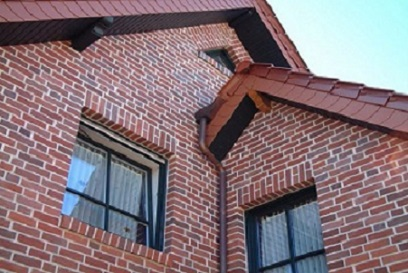
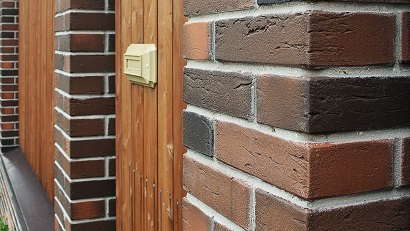
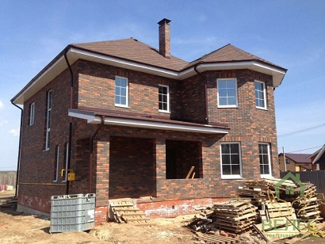

Баварская кладка
— особый вид кирпича, отличающийся неравномерным окрасом разных цветов и оттенков, из-за чего общий вид кладки приобретает разнотонный, глубокий цвет. Достичь эффекта баварской кладки можно и при помощи смешивания различных оттенков однотонного кирпича.

Этот метод используется не только для облицовки фасадных стен различных строений, таким способом возводятся и кирпичные ограждения, беседки и мангалы, декоративные архитектурные элементы. Что же такое «баварская кладка кирпича»?

Для начала нужно уточнить, что это не какая-то неизвестная немецкая кладка, а особый вид кирпича. Что касается непосредственной кладки, то немцы ничего оригинального не придумали, все делается по обычной и всем давно известной технологии. Название появилось в связи с внешним видом кирпичных стен, вызванных параметрами кирпича. Кстати, такой вид имеют стены всех старинных зданий не только в Германии, но и в других европейских странах, в том числе и в России.

Лицевая сторона домов не однотонная, а имеет различные оттенки, образующие непредсказуемые орнаменты. Раньше никто специально не пытался строить дома с «разноцветными» фасадами, наоборот, пытались добиваться однотонного окраса. Но несовершенство технологии производства кирпича не позволяло получать материал с абсолютно одинаковыми свойствами, в зависимости от способа приготовления смеси, химического состава глины, температурных режимов и времени обжига каждая партия, выгружаемая из печи, получалась неодинакового оттенка. Престижные строения оштукатуривались, а промышленные здания и дома бедных жителей имели пестрый вид. В наше время современные технологии позволяют выпускать кирпичи одинакового внешнего вида, точно контролируется замес и химический состав глины, постоянный температурный режим отжига дает возможность на выходе получать абсолютно одинаковые по физическим характеристикам и внешнему виду кирпичи. Но в моду вошел стиль кантри (деревенский), пестрые фасадные стены стали не недостатком, а дизайнерскими решениями. Пришлось производителям разрабатывать специальные технологии обжига для получения баварского кирпича, материала с различными оттенками лицевой поверхности. Сложная технология, конечно, стала причиной повышения себестоимости производства, этим и объясняется высокая цена кирпича.